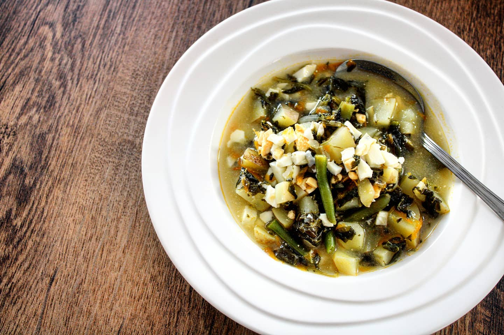

Boršč podľa @varim_s_tynou — Normy Jedál
Ukrajinský zelený boršč podle @lavender.and.macarons
▫️vývar
▫️olivový olej
▫️1 cibule nakrájená najemno
▫️1 nastrouhaná mrkev na hrubém struhadle
▫️8 menších brambor nakrájených na kostičky
▫️zamrazený špenát
▫️zelené fazolky
▫️šťáva z limetky ( podle chuti )
▫️4 uvařené vejce natvrdo
▫️sůl, mletý bílý pepř
Můžete přidat i cuketu, petrželku či čerstvý kopr, nebo taky zakysanou smetanu.
Vývar přivedeme k varu a přisypeme brambory. Snížíme teplotu a vaříme 15 minut. Mezitím zahřejeme olivový olej na pánvi, přidáme cibuli a mrkev a za občasného míchání restujeme cca 10 minut.
Potom k bramborům přidáme orestovanou cibuli a mrkev, ( cuketu, pokud máte ) špenát, fazolky a pokračujeme ve vaření po dobu 5-7 minut. Osolíme a opepříme podle chuti.
Ochutíme ještě citronovou šťávu, přidáme vařená vajíčka nakrájená na kostičky vejce a petržel.
Odstavíme a okamžitě podávejte třeba s kopečkem zakysané smetany ( tu si samozřejmě musíte koupit. Já ji nechala v obchodě 😀) a ještě půlkou vajíčka. ( Musíte si však udělat nějaká navíc, ne zapomenout jako já.. 😀 )
Ať Vám chutná. 💚
#zelenyborsc #borsc #boršč #zeleninovapolevka #borscht #greenborscht #greenborschtrecipe #greenborschtsoup #soup #vegetablesoup #polevka #zeleninovapolevka #polevkajegrunt #novyrecept #pinterest #lavenderandmacarons